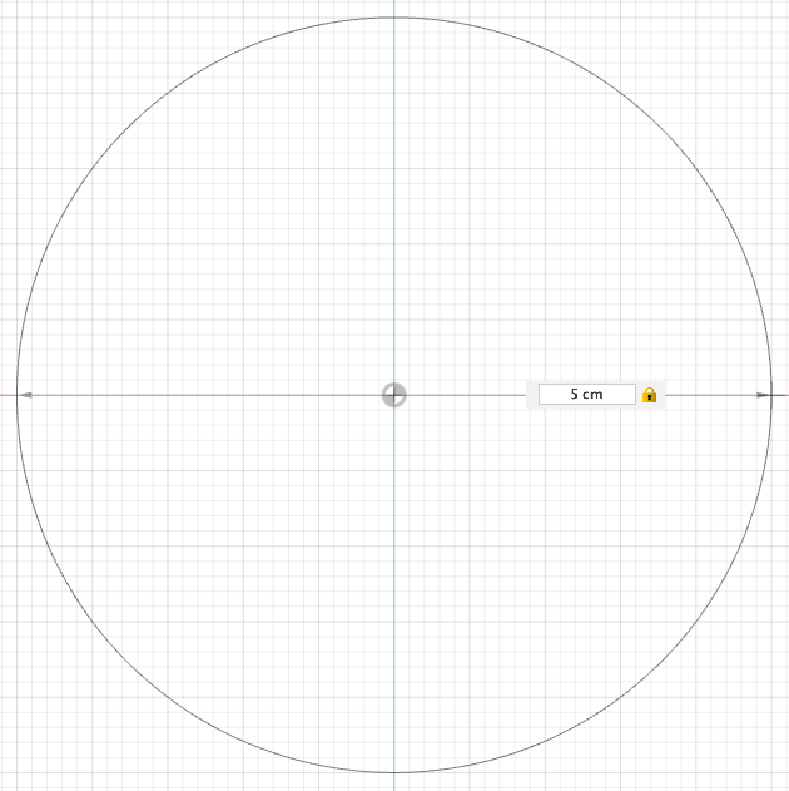
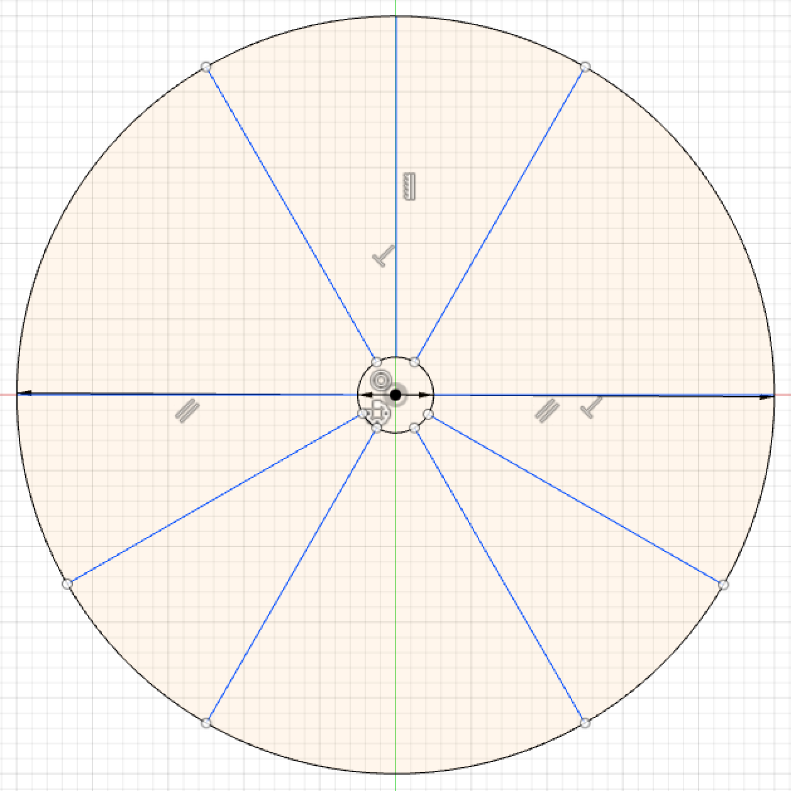
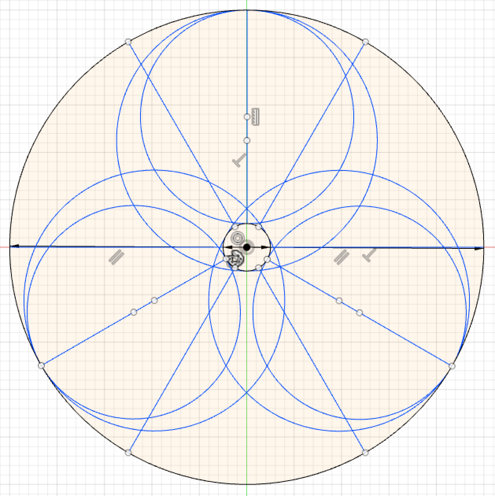
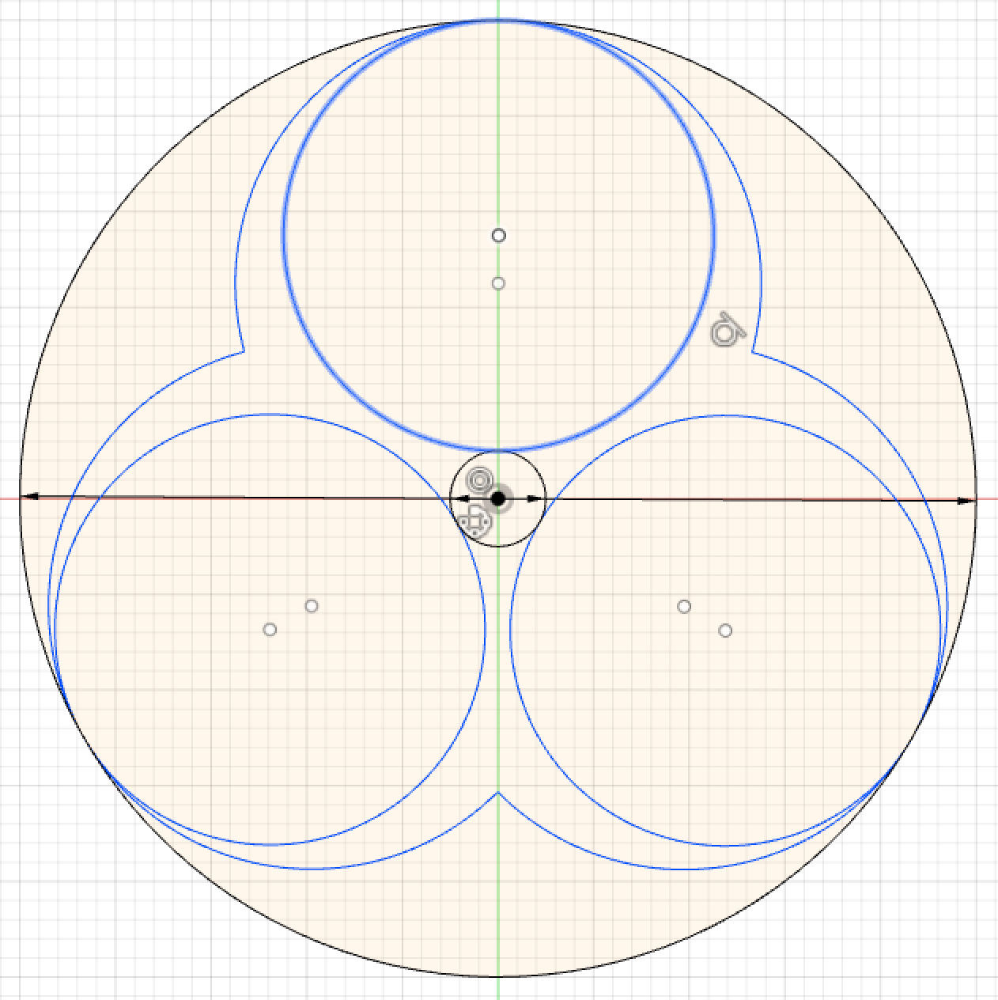
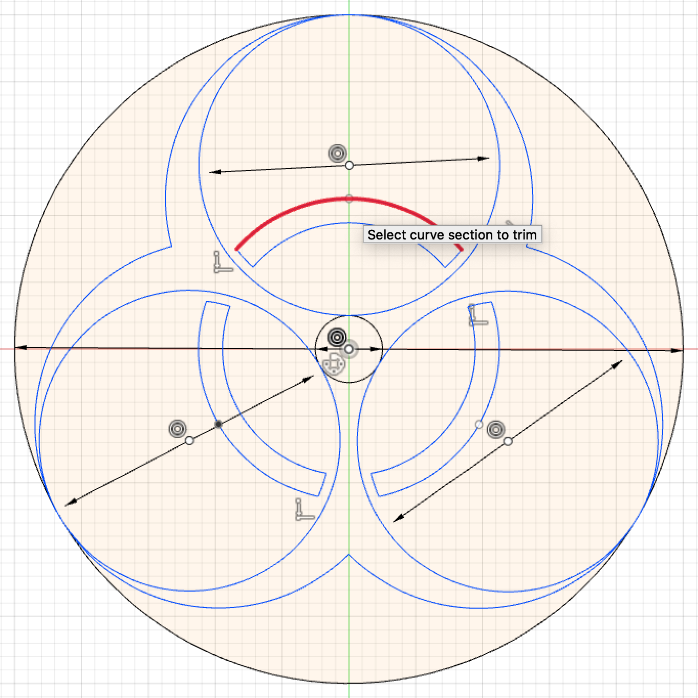
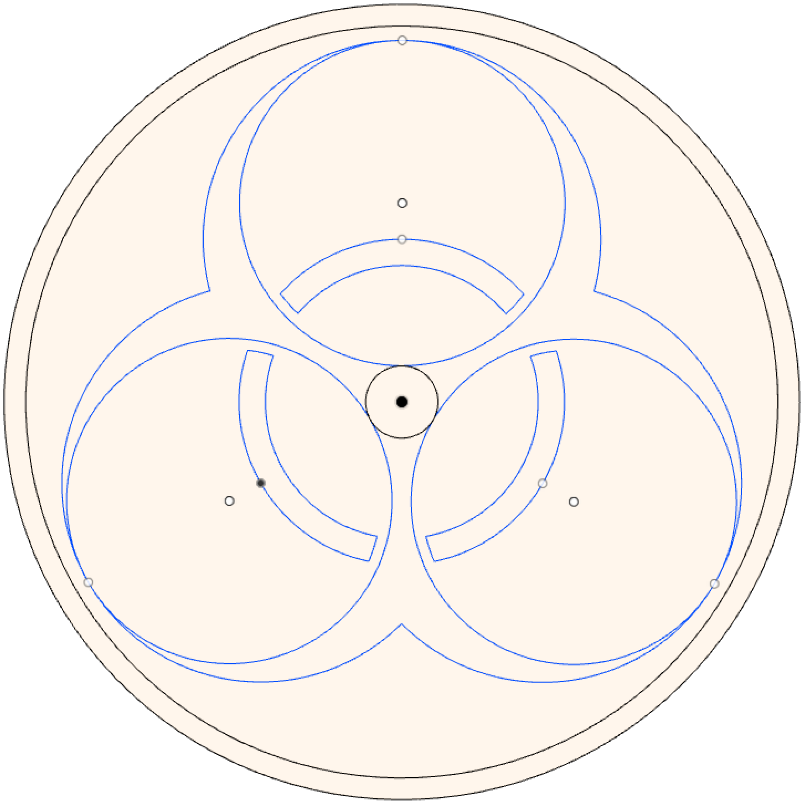

3.2 Designing the Biohazard Symbol
I used Fusion 360 to design my object. I started my design by making a sketch of it on the x/y axises. Initially I drew a circle with a diameter of 5 cm.
Then I created an inner circle which has 0.5 cm diameter, and then drew 3 straight lines going up, going to the right, going to the left from that inner circle to the outer circle. This allowed me to use the "circular pattern" tool to find the 3 areas where the 3 branches of the biohazard symbol will be located.
Using the middle lines in the 3 areas, I created 6 different circles 2 on each middle line. I created one circle with the center as the middle point of the middle line and the outer edge is tangent to inner circle. The seccond circle is fromone tip of the line to the opposite part of the inner circle. This made a shape like this:
After that I deleted the excess part of the circles to make the actual biohazard symbol show up:
After this I had to do a ring which entours the inner circle. For this I made two circles with the same center as the inner circle. However, I do not want the ring to actually touch the branches of the biohazard symbol. Hence, I used another circle with a center as the middle point of the middle line from the previous 3 areas. Then using the "trim" tool I cut out the unnecessary parts of the ring. At the end I had this:
After drawing the ring, I wanted to add outer circles to my design so that my design will have a rim and a space between the rim and the design. I again used the "circle eith midpoint" tool to create 3 more outer circles.
After completing the design, I wanted to extrude my sketch to turn my 2D sketch in to a 3D object. Hence I used the "Extrude" Tool to Extrude the pieces, I extruded all the branches, the outer rim and the inner ring to 0.5 cm and I extruded the rest to 0.3 cm. After extruding my sketch, I colored my object so it will look more aesthetically appealing and more similar to the real image. At the end I got this:
For uploading to the Prusas Slicer CAM Software go to the next page -->